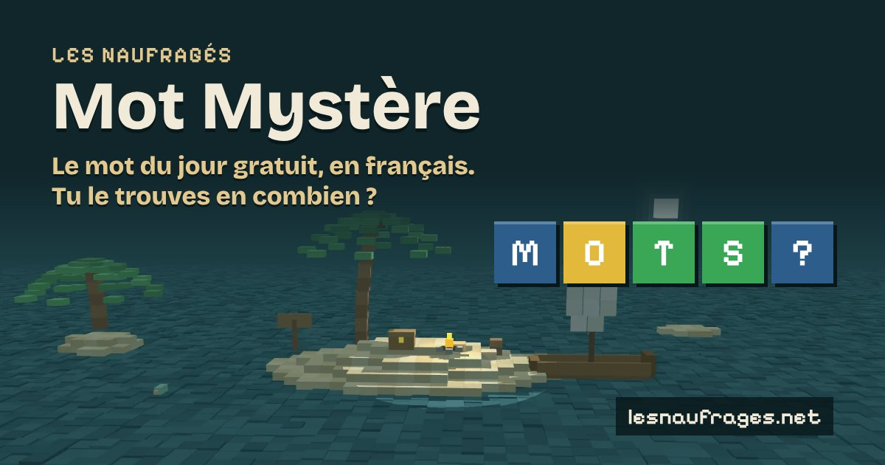

Streamer, youtubeur, journaliste ou serveur partenaire : tout ce qu'il faut pour présenter Les Naufragés en live ou en vidéo est ici.

L'île en 3D (2400 × 800), la carte Mot Mystère (1200 × 630) et la bannière du site.
Dans le kit médiaLes Naufragés est un petit studio indépendant et une communauté francophone. On crée des jeux gratuits dans le navigateur, on fait vivre un serveur Minecraft et un Discord, et on partage nos outils avec les créateurs.
Le jeu du mot du jour gratuit, en français et sans inscription : un mot de 5 lettres, 6 essais, le même pour tout le monde. Chaque mot trouvé débloque une page du Journal du naufragé, une histoire à suivre jour après jour. Idéal en live : le chat joue avec toi grâce au mode Entre amis.
Tu peux utiliser ces logos et images pour parler de nous. Merci de ne pas les modifier et de ne pas présenter ta vidéo comme un partenariat officiel sans nous en parler. Pour un partenariat ou un giveaway, écris-nous sur Discord ou par mail.